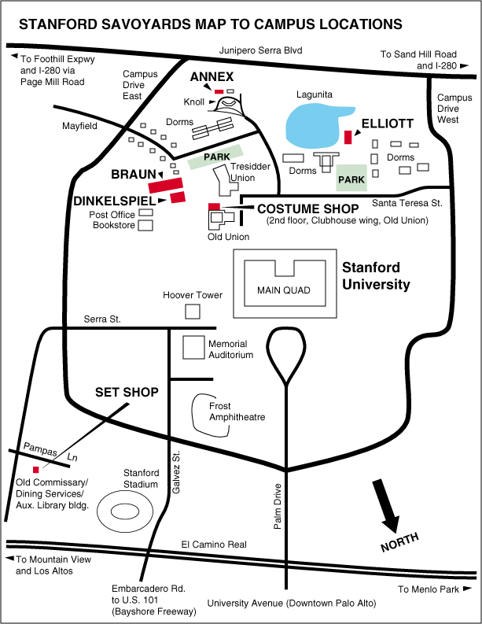

Savoyards Rehearsal & Performance Venues
This is a map to the Stanford Savoyards rehearsal spaces, set/costume
shops and performance venues on the Stanford University campus. Note that it follows Stanford map traditions in orienting to the Quad, so that North is in the lower right corner.
Click on a named location (shown in red) to see written directions
to that location. If this feature is not yet working, browse the written directions.
